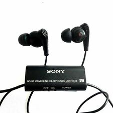

The first Walkman Companion Headphones released by Sony was the MDR-3 model in 1979. The MDR-3 revolutionised the idea of listening to music on the go. They were designed to be lightweight and compact and were sold as an accessory to the first ever walkman.
The first ever noise canceling headphones released by sony was the MDR-NC10 model in 1995. The MDR-NC10 reduced outside noise by 70%. The headphones were designed for travel, outdoor use and work environment as well as blocking unwanted sound.
In 2011, Sony released it's first 3D surround headphones the MDR-DS7500. This was the industries first digital surround headphone system and the 18 hours of playback time made it one of the most advanced wireless headphones on the market.
The most recently released Sony Headphones is the WF-XB700 in 2020, a true wireless headphone with Sony's Extra bass technology. This is Sony's most advanced headphone release with features such as: